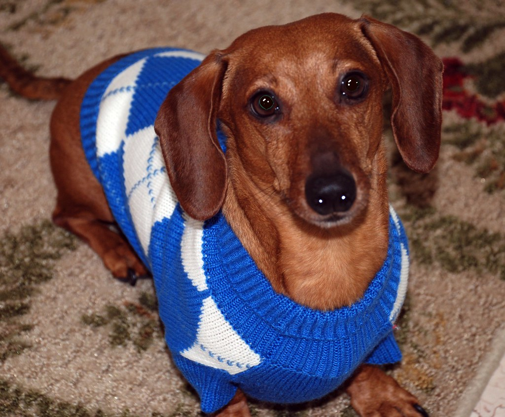

Horário de atendimento: segunda a sexta, das 8h às 19h – sábados, das 8h às 17h.
Acessórios
Roupas, brinquedos, camas e coleiras que deixam a rotina do seu animal mais confortável e divertida.
Todos os itens desta categoria são vendidos na loja física e podem ser reservados por telefone.
Malha de tricô para cães

Cão dachshund vestindo uma malha de tricô azul e branca.
Roupa em tricô com gola alta e recorte para a coleira, indicada para cães de pelo curto nos dias de frio. O tecido é macio, não solta fiapos e pode ser lavado à máquina.
Cesto de vime cheio de bolinhas de brinquedo para cães.
Conjunto de bolinhas resistentes, próprias para cães que gostam de correr atrás e morder. Flutuam na água e podem ser usadas em brincadeiras de buscar dentro e fora de casa.